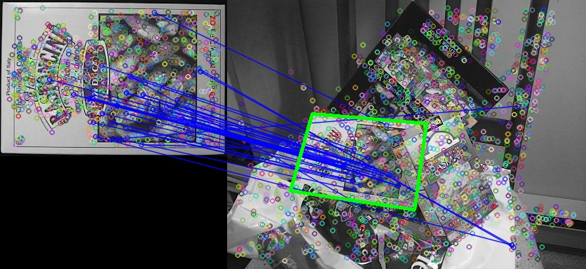

Feature detection

The task of finding point correspondences between two images of the same scene or object is part of many computer vision applications. Image registration, camera calibration, object recognition, and image retrieval are just a few.
The search for discrete image point correspondences can be divided into three main steps. First, ‘interest points’ are selected at distinctive locations in the image, such as corners, blobs, and T-junctions. The most valuable property of an interest point detector is its repeatability. The repeatability expresses the reliability of a detector for finding the same physical interest points under different viewing conditions. Next, the neighbourhood of every interest point is represented by a feature vector. This descriptor has to be distinctive and at the same time robust to noise, detection displacements and geometric and photometric deformations. Finally, the descriptor vectors are matched between different images. The matching is based on a distance between the vectors, e.g. the Mahalanobis or Euclidean distance. The dimension of the descriptor has a direct impact on the time this takes, and less dimensions are desirable for fast interest point matching. However, lower dimensional feature vectors are in general less distinctive than their high-dimensional counterparts.
It has been our goal to develop both a detector and descriptor that, in comparison to the state-of-the-art, are fast to compute while not sacrificing performance. In order to succeed, one has to strike a balance between the above requirements like simplifying the detection scheme while keeping it accurate, and reducing the descriptor’s size while keeping it sufficiently distinctive.
Introductory text of Herbert Bay, Andreas Ess, Tinne Tuytelaars, Luc Van Gool, “SURF: Speeded Up Robust Features”, Computer Vision and Image Understanding (CVIU), Vol. 110, No. 3, pp. 346–359, 2008
A good overview: Computer Vision: Algorithms and Applications, Ch 4 by Richard Szeliski.
TOC
Step 1: Detect features
(what is a feature)
SURF: “Speeded-Up Robust Features”
SurfFeatureDetector detector; std::vector<KeyPoint> keypoints_object, keypoints_scene; detector.detect(img_object, keypoints_object); detector.detect(img_scene, keypoints_scene);
Step 2: Create feature vectors (“descriptors”)
(what is a descriptor i.e. keypoint)
SurfDescriptorExtractor extractor; Mat descriptors_object, descriptors_scene; extractor.compute(img_object, keypoints_object, descriptors_object); extractor.compute(img_scene, keypoints_scene, descriptors_scene);
Step 3: Match features across images
(nearest-neighbor search: each scene keypoint is matched with an object image keypoint based on the keypoints’ descriptor vectors)
FlannBasedMatcher matcher; std::vector<DMatch> matches; matcher.match(descriptors_object, descriptors_scene, matches);
Step 4: Keep only “good” matches
First, find the minimum and maximum distances between keypoints.
double max_dist = 0; double min_dist = 100; for( int i = 0; i < descriptors_object.rows; i++ ) { double dist = matches[i].distance; if(dist < min_dist) min_dist = dist; if(dist > max_dist) max_dist = dist; }
Get the “good” matches.
std::vector<DMatch> good_matches; for(int i = 0; i < descriptors_object.rows; i++) { if(matches[i].distance < 3*min_dist) { good_matches.push_back(matches[i]); } }
Draw the matches on top of the images.
Mat img_matches; // resulting image drawMatches(img_object, keypoints_object, img_scene, keypoints_scene, good_matches, img_matches, Scalar(0, 0, 255));
Step 5: Get the keypoints of the good matches
std::vector<Point2f> obj; std::vector<Point2f> scene; for(int i = 0; i < good_matches.size(); i++) { // queryIdx and trainIdx allow us to get the original points // of our good matches by referring back to the keypoints arrays obj.push_back(keypoints_object[good_matches[i].queryIdx].pt); scene.push_back(keypoints_scene[good_matches[i].trainIdx].pt); }
Step 5: Find the homography across the keypoints
RANSAC method, from Wikipedia:
RANSAC is an abbreviation for “RANdom SAmple Consensus”. It is an iterative method to estimate parameters of a mathematical model from a set of observed data which contains outliers. It is a non-deterministic algorithm in the sense that it produces a reasonable result only with a certain probability, with this probability increasing as more iterations are allowed.
The input to the RANSAC algorithm is a set of observed data values, a parameterized model which can explain or be fitted to the observations, and some confidence parameters.
RANSAC achieves its goal by iteratively selecting a random subset of the original data. These data are hypothetical inliers and this hypothesis is then tested as follows:
- A model is fitted to the hypothetical inliers, i.e. all free parameters of the model are reconstructed from the inliers.
- All other data are then tested against the fitted model and, if a point fits well to the estimated model, also considered as a hypothetical inlier.
- The estimated model is reasonably good if sufficiently many points have been classified as hypothetical inliers.
- The model is reestimated from all hypothetical inliers, because it has only been estimated from the initial set of hypothetical inliers.
- Finally, the model is evaluated by estimating the error of the inliers relative to the model. However, this might lead the algorithm picking a trivial solution, with a minimal set of inliers (as the model will result in zero error estimation). Instead, the “best model” is typically chosen as the one with the largest consensus set
This procedure is repeated a fixed number of times, each time producing either a model which is rejected because too few points are classified as inliers or a refined model together with a corresponding error measure. In the latter case, we keep the refined model if its error is lower than the last saved model.
Mat H = findHomography(obj, scene, CV_RANSAC);
Transform the boundaries in the object image to the scene image, using the homography.
std::vector<Point2f> obj_corners(4); obj_corners[0] = cvPoint(0,0); obj_corners[1] = cvPoint(img_object.cols, 0); obj_corners[2] = cvPoint(img_object.cols, img_object.rows); obj_corners[3] = cvPoint(0, img_object.rows); std::vector<Point2f> scene_corners(4); perspectiveTransform(obj_corners, scene_corners, H);
Draw the transformed boundaries in the scene.
line(img_matches,
scene_corners[0] + Point2f(img_object.cols, 0),
scene_corners[1] + Point2f(img_object.cols, 0),
Scalar(0, 255, 0), 4);
line(img_matches,
scene_corners[1] + Point2f(img_object.cols, 0),
scene_corners[2] + Point2f(img_object.cols, 0),
Scalar(0, 255, 0), 4);
line(img_matches,
scene_corners[2] + Point2f(img_object.cols, 0),
scene_corners[3] + Point2f(img_object.cols, 0),
Scalar(0, 255, 0), 4);
line(img_matches,
scene_corners[3] + Point2f(img_object.cols, 0),
scene_corners[0] + Point2f(img_object.cols, 0),
Scalar(0, 255, 0), 4);